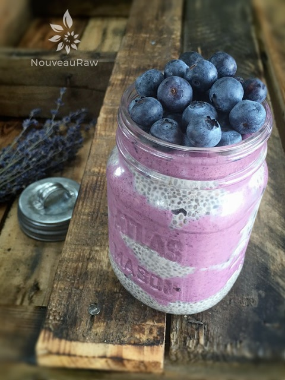

Blackberry Chia “Jarfait”
~ raw, vegan, gluten-free ~
Jarfait. Don’t you just love that name? A great play on words. It’s not my idea. I am not sure who invented the word “jarfait, ” but parfaits have been around for a coon’s age (I hear that is a long time). It is a dish that is layered with various ingredients, which can be sweet or savory. And well, being the jar lover that I am, I am thrilled to build a sweet treat such as this.
Luxurious mouth texture
You are going to love this recipe. The cream layer has a luxurious mouth texture that makes my eyes roll back into my head. This is achieved in two ways. Soaking the cashews causes them to swell and soften. This is vital, and this step shouldn’t be skipped.
Next, creating the cashew cream in a high-powered blender. A good blender can make all the difference. I recommend the Vitamix or Blendtec. Depending on your blender this process can take anywhere from one to five minutes. If you have a standard blender and it is taking several minutes to process it to a smooth cream, be careful that you don’t overheat the “cream.” If it starts to get warm, turn the machine off and allow it to cool before proceeding.
Layer after layer
The chia seed layer has a texture that closely resembles tapioca pudding. If this texture is bothersome to your tongue, you can grind the chia seeds into a powder before adding them to the recipe. Chia seeds are packed full of amazing nutrients… I love these little buggers. If you want to learn more about them, please check out my post on Chia Seeds.
You can build a parfait in just about any container, just make sure that it is clear. Being able to view the layers really adds to the fun of this dish. I noted below the volume that each component yields rather than telling you how many treats it will make. That will depend on the dish you use. And truth be told, you don’t have to use a jar. A good ole’ standard bowl does the trick too. :) Plop, it, swirl it, and add some fruit on top. Have fun and enjoy!
Pudding: yields 4 cups
Blackberry “Cream”: yields 2 1/2 cup
- 1 cup organic blackberries, juiced
- 2 cups cashews, soaked for 2+ hours
- 2 tsp vanilla extract
- 1/2 tsp liquid stevia
- dash Himalayan pink salt
Preparation:
- In a medium-sized bowl combine the following; almond milk, chia seed, stevia, vanilla, and blackberries.
- I used organic frozen blackberries, thawed, and drained. Save the liquid. Mix, cover, and set aside until all of the liquid is absorbed.
- If you are opposed to using stevia, replace it with 2 Tbsp of liquid sweetener. Taste test.
- For the “cream” you can use the blackberry liquid from the frozen berries. If you are using fresh, blend the berries in the blender, pour through a nut milk bag to remove the seeds. Discard the seeds and use the juice for the “cream” part.
- In the blender combine the blackberry juice, cashews (drain and rinse first), vanilla, stevia, and salt. Blend until creamy smooth. Depending on your blender this process can take 1-5 minutes. Stop periodically and rub some of the cream between your fingers. If it gritty continue blending. Remember, we want a smooth mouth-feel texture.
- Assemble the jarfaits. Alternate layers of the pudding and the cream until you have no more pudding and cream.
- Allow chilling in the fridge to firm up or eat right away. These should last up to 4-5 days in the fridge.

© AmieSue.com